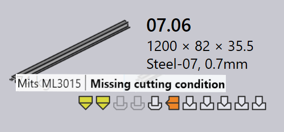

Verktygsstatus
I TruSmartCAM indikerar varje delbricka visuellt verktygsstatus för den delen för alla tillgängliga maskiner. Detta hjälper användare att snabbt se vilka maskiner en del är verktygsförsedd för, och om verktygningen är klar, kräver granskning eller saknas.
-
Verktygsstatus visas direkt på delbrickan med hjälp av ikoner och färgindikatorer.
-
Varje ikon representerar en maskinteknik (t.ex. stansning, laser).
-
Ikonens färg indikerar aktuell verktygsstatus för den maskinen.
Tabellen nedan förklarar betydelsen av varje ikon och färg, vilket hjälper användare att tolka verktygsstatus korrekt.

| Maskinikon | Beskrivning |
|---|---|
|
Laserskärmaskin |
|
Stansmaskin |
|
Kantpress |
|
Panelbockare |
| Verktygsstatus | Beskrivning |
|---|---|
|
Verktygning är ok |
|
Verktygning har varningar |
|
Verktygning har fel |
|
Verktygning inte tillgänglig |
Verktygningsfel
Ett CAM-fel (Computer-Aided Manufacturing) uppstår under verktygnings- eller tillverkningsförberedelsestadiet. Dessa fel uppstår på grund av problem som verktygskollisioner, saknad verktygning eller ogiltiga skärförhållanden.
Böjverktygningsfel
-
Kollisioner identifierade och Gripdonsfel : Böjinställningen orsakar verktygs- eller gripperkollisioner under simulering.


-
Överbelastning fel och Smal fläns eller hål för nära : Böjverktygen är överbelastade, eller hål är placerade för nära böjlinjen, vilket kan skada delen eller verktygen.


-
Granskning krävs och Kort stans/dyna-intervall : Verktygsinställningen behöver manuell inspektion, eller det valda matricspan/stansspan är mindre än vad som krävs för delen.


-
Riggning inte kopplad, Dåligt bakre anslag, eller Part too big for this machine : Nödvändiga böjverktyg är inte tillgängliga, bakstoppet är inte konfigurerat korrekt, eller delen är för stor för den valda maskinen.


Skärverktygningsfel
-
Skärvillkor saknas : Skärförhållandet är inte mappat för råmaterialet, så skärning kan inte utföras.

-
Origgade eller delvis riggade konturer : Some shapes or edges are missed or only partly covered during the tooling process, making the part incomplete for cutting.